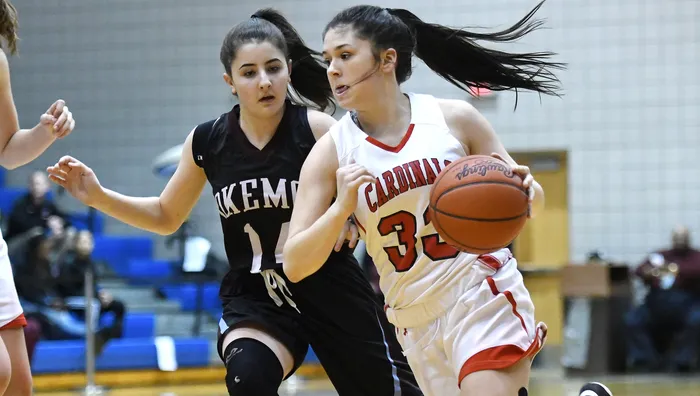

About Jacqueline
My name is Jacqueline ‘J’ Semerly. I was born August of 2002 in the outskirts of Chicago; Skokie, Illinois. My family quickly relocated to Lansing, Michigan where I lived with my Yiayia (grandmother) before finally settling in the suburb of Okemos, Michigan to begin schooling. My ethnic background plays a major part in who I am and how I was raised. My father is the son of an immigrant mother, who came to Lansing, from Greece to flee wartime oppression. I spent 7+ years in “greek school” learning the language and culture through my Orthodox church. I’ve always kept a busy schedule, maintaining my grades in school, playing year-round competitive sports, and fostering meaningful connections. The rigor and discipline I have been able to keep up throughout my life have carved me into the independent, determined, and albeit stubborn person I am today. But it is these characteristics that have taken me all the way to Babson.
I have so luckily been blessed to experience the most wonderful and inviting community here at Babson. I touched down on campus as a freshman and was welcomed with open arms by countless programs, groups, and peers. Today, as a graduating senior, I can proudly say I have retained the same group of friends that I met on day one of my college experience. The four of us soon became inseparable, and it has been as such ever since. That very week I met my boyfriend who I began dating a few months after, and we remain a strong couple today, nearly four years later. The educational experience at Babson has been just as wonderful. I have had the opportunity to learn from, and amongst, the most knowledgeable figures of their respective fields. FME, although a lot of work, showed me right away that whatever it is I choose to pursue, I have the toolbox and the ability to make it happen. Through all the helpful technical skills I have picked up at Babson, the most important takeaways are life lessons. My mindset has completely changed since being here; I have more confidence in my abilities and have allowed myself to be proud of my accolades and celebrate my work ethic. I know now, entrepreneurs are no smarter than you or I, they just put action behind their ideas, and took those first steps forward.
My Interests
I can’t remember a time in my life when I didn’t play sports – I was holding a tennis racquet from the moment I was able to pick one up on my own. I spent years in tennis, teeball, ballet, soccer, golf, gymnastics, and volleyball, but found my spot on the basketball court to be home. I began playing basketball year round in the fourth grade; Travel basketball beginning in the fall, school season beginning in the winter, straight into playing with the travel team again for the spring, and then tournaments and pick up leagues throughout the summer. In 7th grade I got an injury in a game that set me back in my sport - I lost the majority of mobility in my dominant forearm, and thus lost my ability to shoot the ball. I taught myself to shoot left-handed, and rehabbed my dominant right arm, all the while, never missing practice, and even playing in the games while my right arm was unusable. I then re-taught myself how to shoot with my dominant arm, now lacking the mobility I once had, and set myself back on track after years of hard work. By high school, I had achieved my childhood dream of making the varsity basketball team as a freshman, and then surpassing that goal by going on to make the starting 5 lineup by the end of the season. Come spring of that year, I ended up on the varsity tennis team, while continuing with my spring travel season as well. Basketball is actually the reason I am here at Babson. Coach Judy Blinstrub, veteran coach at Babson, recruited me in my junior year of highschool to come play for the Beavers. Deciding it was a perfect fit, Babson was the one and only school I applied for - and I’m glad things worked out. After my freshman year, I decided to end my basketball career to further my professional career.
My other passion in life has always been art. As a kid, if I wasn’t in school or playing sports, I was likely making art. I got serious about drawing in middle school, where I used my sister’s hand-me-down art supplies to make pencil drawings. As my art developed, the number one comment I got on my designs was “that should be a tattoo”. So in highschool, I bought a tattoo gun and self taught myself to make art in this new medium. Today, I still do tattoos, and plan to get a license one day… I swear.
Jacqueline Eleni Semerly
jacqueline.semerly@gmail.com